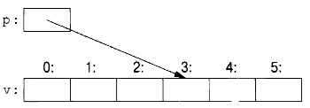

⇐1.8. Проверки Содержание 1.9.1. Присваивание⇒
С++ предлагает непосредственное сопоставление с оборудованием. Когда вы используете одну из базовых операций, реализация представляет собой то, что предлагает оборудование (как правило, отдельную машинную операцию). Например, сложение двух int, х+у, выполняет машинную команду целочисленного сложения.
Реализация С++ рассматривает память компьютера как последовательность ячеек памяти, в которых можно размещать (типизированные) объекты и адресовать их с помощью указателей.
Указатель представлен в памяти как машинный адрес, поэтому числовое значение р на этом рисунке равно 3. Если изображение кажется вам похожим на массив(§ 1.7), то это потому, что массив является базовой абстракцией С++ для "непрерывной последовательности объектов в памяти".
Простое сопоставление фундаментальных языковых конструкций с аппаратными средствами имеет решающее значение для высокой производительности на низком уровне, которой десятилетиями славятся С и С++. Основная модель машины в С и С++ основана на компьютерном оборудовании, а не на некоторой математической абстракции.